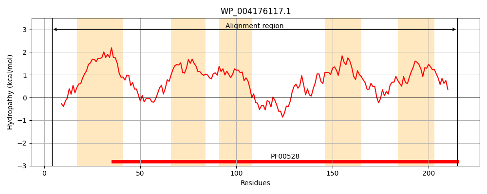
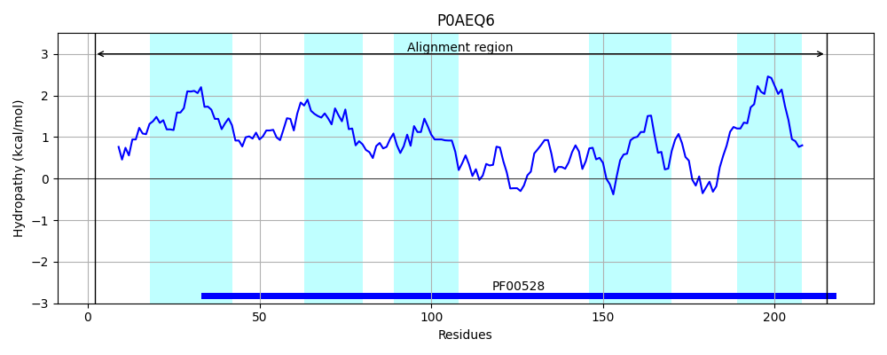
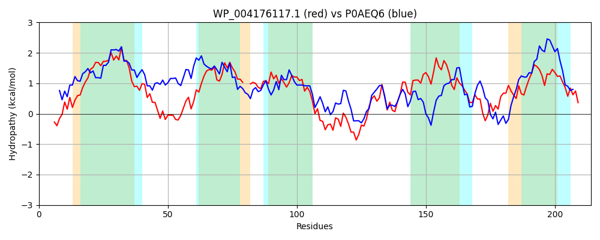

Hit Accession: P0AEQ6
Hit TCID: 3.A.1.3.2
Hit Description: gnl|BL_ORD_ID|8788 gnl|TC-DB|P0AEQ6|3.A.1.3.2 Glutamine transport system permease protein glnP - Escherichia coli.
Mach Len: 214
e:0.000000
Query TMS Count : 5
Hit TMS Count: 5
TMS-Overlap Score: 4.400000
Predicted Substrates:CHEBI:5432;glutamine
BLAST Alignment:
Score: 297 , Bit scores: 119 bits, E-value: 2.5e-33, Alignment length: 214, Percentage identity: 35
Query: 4 QLHFSELWPHWPELLAGLWVTVQLTVLATIGGLAIGILGAAIRSGRPGMLSRVWGGYVEIIRNTPFVVQLFFIVFGLPNL--GLKMTAGEAALLAMVVNLGAYSTEIVRAGIQVTPKGQWEAGRVLGLSRTQTFVRVVLPPALQRIYPALVSQCIIVMLGSSVVSQVSYEELTFAANLIQSRTFLSFEVYLVTTGIYLALSIAMRQLLMAAGRK 215
Q +S +WP P L+ G +T+ ++VL GGL IG+L R+ + + V ++E+IR TP VVQ+ FI F LP L++ AA++ +++N GAY EI R + KG EAG LGLSR +T V+LP AL+R+ P L +Q II + +S+ + ELT I + F + E++ YL +++ + +L R+
Sbjct: 2 QFDWSAIWPAIPLLIEGAKMTLWISVLGLAGGLVIGLLAGFARTFGGWIANHVALVFIEVIRGTPIVVQVMFIYFALPMAFNDLRIDPFTAAVVTIMINSGAYIAEITRGAVLSIHKGFREAGLALGLSRWETIRYVILPLALRRMLPPLGNQWIISIKDTSLFIVIGVAELTRQGQEIIAGNFRALEIWSAVAVFYLIITLVLSFILRRLERR 215 | Protein Hydropathy Plots: |
|---|
|  |  |
Pairwise Alignment-Hydropathy Plot:
|
|---|
|  |